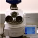

Center for Materials Research | Graduate Programs
Welcome
The Center for Materials Research (CMR) conducts cutting-edge esearch in well-equipped research facilitiesin areas of crystal growth and nanotechnology, polymer processing, thin film deposition, nonlinear optics, and laser designe, optical spectroscopy and magnetic resonance. CMR faculty members are energetic reearches dedicated to furthing knowlege in their respective disciplines. They foucus on researh prolems of fundamental andpractical importance inpotonics and spin slectronics andmakes substantive efforts to cooperate with other universities, industry, and government labororatories. Enjoy your visit of site and we invite you to sign up for our newsletter.
CMR Events
Featured Research
Computational Materials Laboratory Now is the time for all good men to come to the aid of their country. Now is the time for all good men to come to the aid of their country.Now is the time for all good men to end. |
|
 |
Development of Nano-structured materials and multilayered thin films. Research is the greatest measure of the school. Research is the greatest mesure of the world |
 |
Development of Organic Molecular Beam Deposition (OMBD) Technique for processing of organic nano-layered structures Research is the greatest measure of the school. Research is the greatest mesure of the world |
|  | Novel Nonlinear Materials and Laser Sources Laboratory |
CMR Spotlight
QUICK LINKS
Research Groups
Workshops
Conferences
Graduate Blogs
Undergrad Blogs
CMR Video's
Phote Gallery
EVENTS
Come here the speakers and participate in the discussion. Refreshments provided.
more